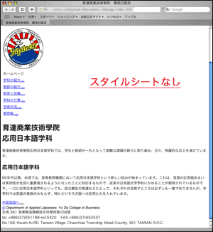
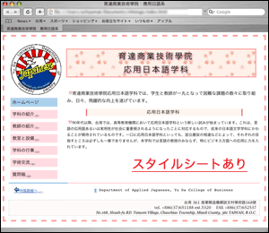
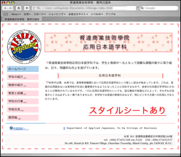

HTML文書HTML Documentをどのように表示するかは、ユーザエージェントuser agent（ブラウザbrowser）によって異なる。
HTMLはテキストの論理構造を記述するものなので、ブラウザでの表示presentationを細かく指定することはできない。【参考→ＨＴＭＬとは？】



HTML文書の表示方法presentationの詳細を指定するには、「スタイルシート」style sheetを用いる。現在、最も一般的なものはCSSと呼ばれるスタイルシートである。
スタイルシートを用いると、文字の大きさや形や色、背景の色、枠線の有無、項目の配置などを自由に設定・変更することができるようになる。
ここで示した例（図）は、同じHTML文書に対して、スタイルシートを適用した場合の表示と、スタイルシートを適用しない場合の表示とを比較したものである。